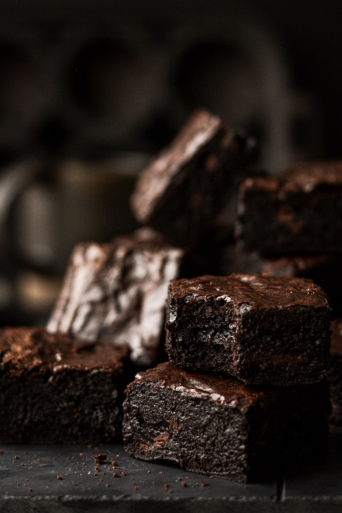

¡La mejor receta de brownies! con costra crocante, humedos por dentros y con un sabor a chocolate unico
Siempre hay un antojo para comer este plato, y ahora te mostraremos la mejor receta traida desde Nueva York
Para que los brownies sean los mejores, su truco esta en la calidad de sus ingredientes, muy importante.
Ingredientes.
- 2 huevos medianos + un ligero chorro de agua.
- 300 gramos de Azucar impalpable
- 300 gramos Cacao Amargo en polvo, elegir uno de buena calidad es importante!
- 170 gramos de Manteca derretida
- Un chorrito de extracto de vainilla
- (Opcional)Chispas de chocolate a gusto
Pasos a seguir.
Desde cero, los pasos a seguir son muy simples
- Primero, mezclar los ingredientes secos y humedos en recipientes separados, incorporando el azucar con el cacao, y por otra parte, la manteca, la vainilla, los huevos y el agua
- Luego incorporamos ambos, espolvoreando lentamente los ingredientes secos en el recipiente de humedos, en este paso podremos agregar las chispas de chocolate
- Pon la mezcla en una sarten para horno de 20 centimetros, asegurate de incorporar bien en las esquinas y suavizar la parte superior.
- Finalmente al horno! llevar la mezcla a una temperatura baja de 160 grados durante 45 minutos aproximadamente
- Una buena recomendacion es priorizar sacarlos antes que despues, consiguiendo asi un interior humedo sin secarse
- Esperar a que enfrien y a disfrutar!